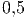

Consideremos o seguinte problema de teste:
Exemplo 9.7.1. Adams-Moulton de quarta ordem
=======
src="main4427x.png" alt="(
|{ y′ = − αy
=======
src="main4432x.png" alt="(
<<<<<<< HEAD
|{ y′ = - αy
>>>>>>> 2f43bff4df7198ad5fd8ebe602c2f00c0d1ecf01
=======
|{ y′ = − αy
>>>>>>> a89bb6fd5bd3faff679a502c98ff65257591aa83
|( y(0) = 1 " class="math-display" >
cuja solução exata é dada por  . .
Considere agora o método de Euler aplicado a este problema com passa
   Fixamos um Conclusão: Se o passo Retornemos ao problema de valor inicial (10.1) dado por: O Método de Euler aplicado à solução desse problema consiste em aproximar
a derivada   é o passo do método, que consideraremos uma constante. Assim temos
(10.3) se transforma em: é o passo do método, que consideraremos uma constante. Assim temos
(10.3) se transforma em:
Definimos, então,  é a condição
inicial; é a condição
inicial;  pode ser obtido de pode ser obtido de  ; ;  , de , de  e assim por diante,
calculamos o termo e assim por diante,
calculamos o termo  apartir do anterior apartir do anterior  . .
Exemplo 10.1.1. Retornemos ao o problema de valor inicial do exemplo (10.2):  Cuja solução é    , a solução aproximada pelo Método de Euler é , a solução aproximada pelo Método de Euler é
  , mas se , mas se  é pequeno, a aproximação é boa,
pois é pequeno, a aproximação é boa,
pois
 Vamos agora, analisar o desempenho do Método de Euler usando um exemplo mais complicado, porém ainda simples suficiente para que possamos obter a solução exata: Podemos obter a solução exata desta equação usando o método de separação de variáveis e o método das frações parciais. Para tal escrevemos:
O termo
Integrando termo-a-termo, temos a seguinte equação algébrica relacionando
Onde
Equivalente a
e
Colocando o termo  em evidência, encontramos:
E, finalmente, encontramos a solução exata dada por Vejamos, agora, o esquema iterativo produzido pelo método de Euler:  Para fins de comparação, calculamos a solução de 10.1.2 e de (??) para alguns
valores de No exemplo a seguir, apresentamos um problema envolvendo uma equação
não-autônoma, isto é, quando a função O esquema recursivo de Euler fica:  Comparação
No exemplo 10.1.4, mostramos como o Método de Euler pode ser facilmente estendido para problemas envolvendo sistemas de equações diferenciais.. Exemplo 10.1.4. Escreva o processo iterativo de Euler para resolver numericamente o seguinte sistema de equações diferenciais   e e  . .
Para aplicar o Método de Euler a um sistema, devemos encarar as diversas incógnitas do sistema como formando um vetor, neste caso, escrevemos:    Exemplo 10.1.5. Escreva o problema de valor inicial de segunda ordem dado por  A fim de transformar a equação diferencial dada em um sistema de equações
de primeira ordem, introduzimos a substituição   ExercíciosE 10.1.1. Resolva o problema de valor inicial dado por   e e  para obter aproximações para para obter aproximações para  . Compare
com a solução exata dada por . Compare
com a solução exata dada por 
Resposta.
 com com  e e  com com  . A solução exata vale . A solução exata vale 
E 10.1.2. Resolva o problema de valor inicial dado por   , ,  , ,  e e  para obter
aproximações para para obter
aproximações para  e e  . .
Resposta.
 e e  com com  , ,  e e  com com  , ,
 e e  com com  e e  e e  com com  . .
E 10.1.3. Resolva o problema de valor inicial dado por   , ,  , ,  , ,  e e  para obter
aproximações para para obter
aproximações para  . .
Resposta.
<<<<<<< HEAD
<<<<<<< HEAD
<<<<<<< HEAD
>>>>>>> 40376933b526cbe480643de4137719793488d124
 com com  , ,  com com  , ,  com com  , ,
 com com  , ,  com com 
>>>>>> c2790254e7e5196a945409616a59006dc5a6f1d1 id="tailmainse45.html"> ======= |
 :
:
 , de forma que
, de forma que  . Mas observamos que
. Mas observamos que
 somente quando
somente quando  e solução positivas somente quando
e solução positivas somente quando
 .
.
 for muito grande, o método pode se tornar
instável, produzindo solução espúrias.
for muito grande, o método pode se tornar
instável, produzindo solução espúrias.

 por um esquema de primeira ordem do tipo
por um esquema de primeira ordem do tipo

 e
e  como a aproximação para
como a aproximação para  produzida pelo Método de Euler. Assim, obtemos
produzida pelo Método de Euler. Assim, obtemos 
 . O método de Euler aplicado a este problema
produz o seguinte esquema:
. O método de Euler aplicado a este problema
produz o seguinte esquema: 

 pode ser decomposto em frações parciais como
pode ser decomposto em frações parciais como  e
chegamos na seguinte equação diferencial:
e
chegamos na seguinte equação diferencial:

 e
e  :
:

 é a constante de integração, que é definida pela condição inicial,
isto é,
é a constante de integração, que é definida pela condição inicial,
isto é,  em
em  . Substituindo, temos
. Substituindo, temos  . O que resulta
em:
. O que resulta
em:


 .
.
 e de passo
e de passo  e resumimos na Tabela
e resumimos na Tabela 


 depende explicitamente do
tempo.
depende explicitamente do
tempo.

 .
.

 , de forma que obteremos
o sistema:
, de forma que obteremos
o sistema: